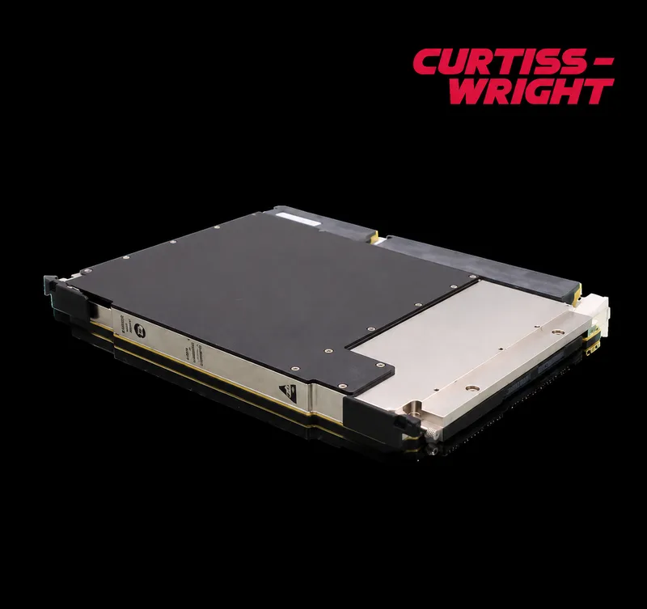

Work
Liquid-Cooled Chassis Redesign
At Curtiss-Wright, I redrew the cooling paths in a rugged chassis so cheaper machining could hold its thermal performance.
- Conduction-cooled products tested
- 9